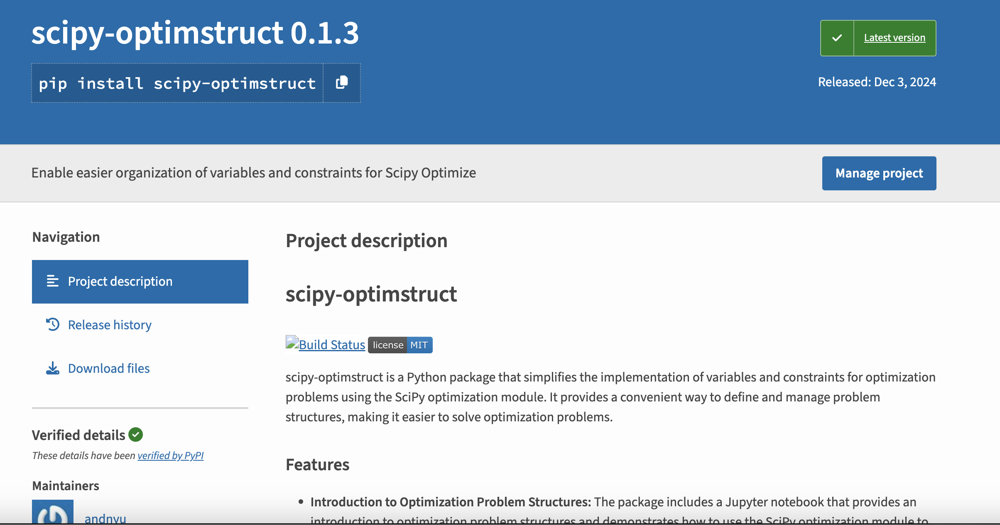
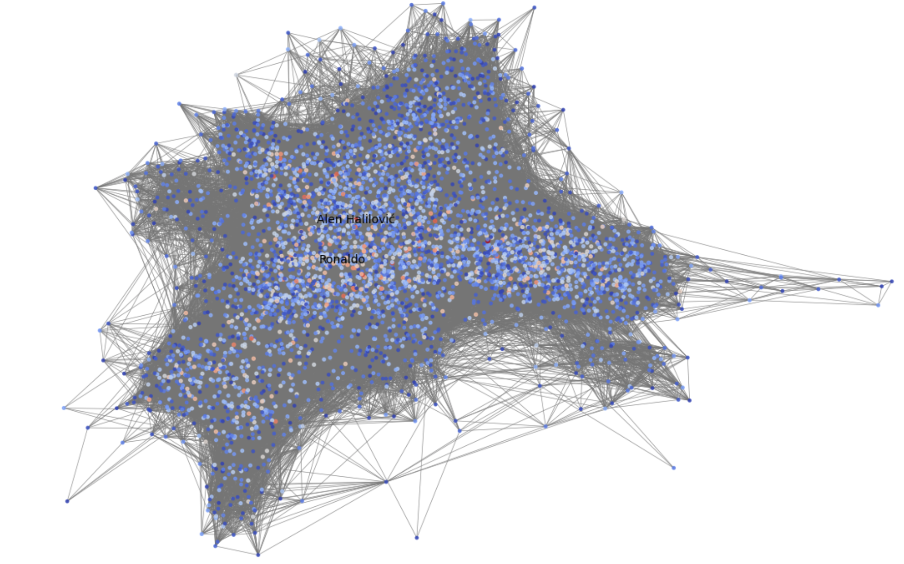

About Me
Born and raised in a mid-sized city in the islands of Central Philippines, I grew up witnessing how technology could bridge gaps and transform lives. This inspired my journey as a data scientist and developer, where I’ve built AI-powered solutions leveraging geospatial, demographic, and shopper data. I have also led product strategy across Southeast Asia and ANZ, driving impactful business and consumer outcomes. I am priviledged to have had a diverse set of experiences, having lived, worked and played football in 5 (and hopefully counting) cities.
Projects
-
Where PH
Built a web app which used geospatial join to map a set of coordinates to detailed location information (village, city, province). Also implemented authentication & credits module that enabled batch upload for registered users. Project saved 100+ labor hours and was used across multiple area mapping projects.
View on GitHub -

Scipy Optimstruct
scipy-optimstruct is a Python package that simplifies the implementation of variables and constraints for optimization problems using the SciPy optimization module. It provides a convenient way to define and manage problem structures, making it easier to solve optimization problems.
View on GitHub View on PyPI -
Ilonggle
Wordle clone using Ilonggo language that reached 2000 users across 20 countries. Build a webscraper to build Ilonggo dictionary from trusted sources and personally selected final word list.
Hampang ta Ilonggle! -

Six Degrees of FIFA Separation
Used graph theory to analyze football player connections, discovering Allan Nyom as the most connected player.
Stay tuned for the FIFA 2024 update
View Python Notebook
Contact
If you'd like to get in touch, feel free to reach out via the links below.